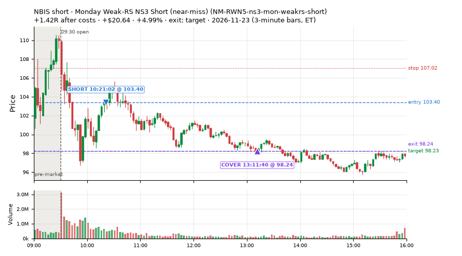
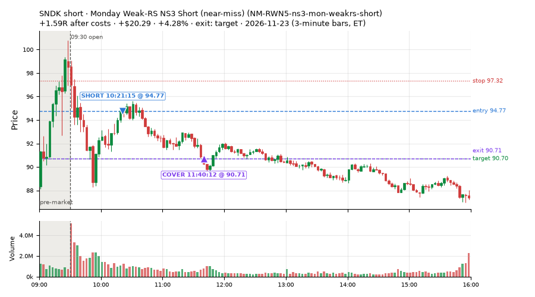
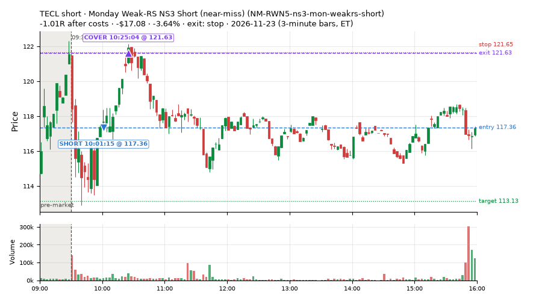
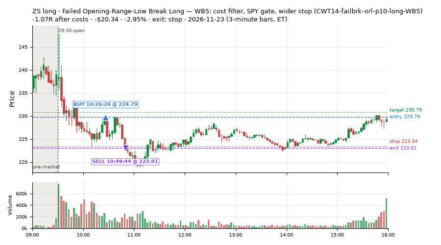
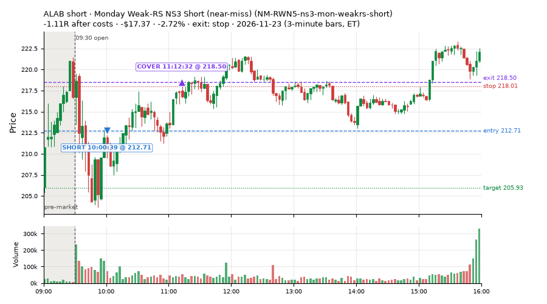
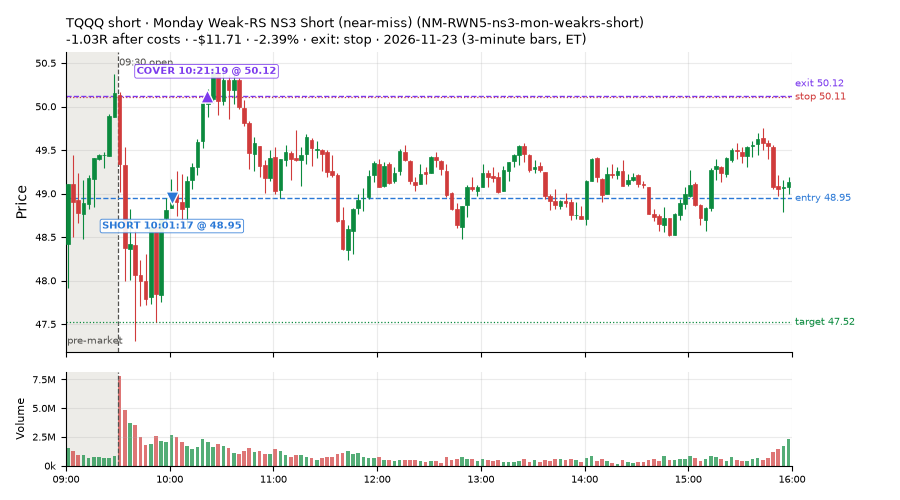
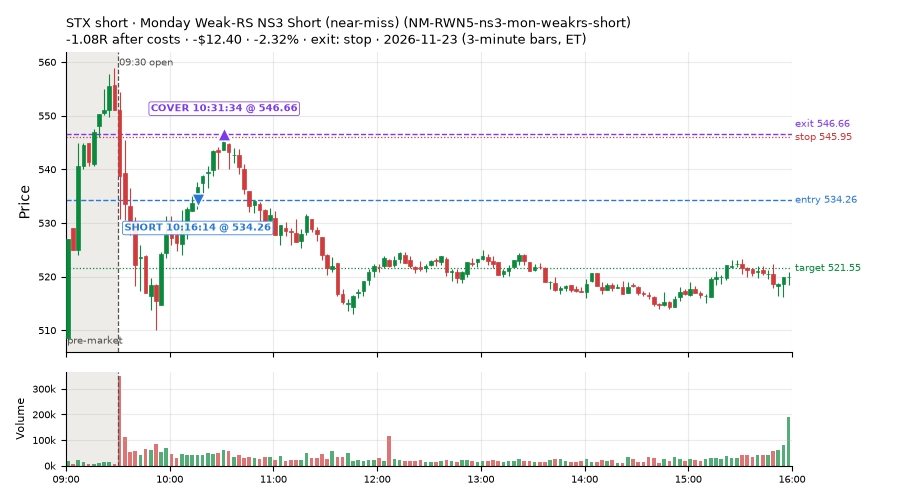

136 trades · win rate 60% · P/L $208.14
PROBATION: no live setup has passed both locked test periods. 10 owner-directed setups added 2026-10-08 (MarcoFlow top 5 + 5 new), untested live. RW6G1 (RW6 + VWAP band guard) added 2026-10-09, probation.

| Symbol | Setup | Side | In | Out | Entry | Exit | Exit reason | % gained | P/L |
|---|---|---|---|---|---|---|---|---|---|
| NBIS | Monday Weak-RS NS3 Short (near-miss) (NM-RWN5-ns3-mon-weakrs-short) | short | 10:21 | 13:11 | 103.40 | 98.24 | target | +4.99% | $20.64 |
| AAOI | Monday Weak-RS NS3 Short (near-miss) (NM-RWN5-ns3-mon-weakrs-short) | short | 10:30 | 11:37 | 40.72 | 38.73 | target | +4.88% | $23.86 |
| SNDK | Monday Weak-RS NS3 Short (near-miss) (NM-RWN5-ns3-mon-weakrs-short) | short | 10:21 | 11:40 | 94.77 | 90.71 | target | +4.28% | $20.29 |
| Symbol | Setup | Side | In | Out | Entry | Exit | Exit reason | % lost | P/L |
|---|---|---|---|---|---|---|---|---|---|
| TECL | NM-RWN5-ns3-mon-weakrs-short | short | 10:01 | 10:25 | 117.36 | 121.63 | stop | -3.64% | $-17.08 |
| ZS | CWT14-failbrk-orl-p10-long-WB5 | long | 10:26 | 10:49 | 229.79 | 223.01 | stop | -2.95% | $-20.34 |
| ALAB | NM-RWN5-ns3-mon-weakrs-short | short | 10:00 | 11:12 | 212.71 | 218.50 | stop | -2.72% | $-17.37 |
| TQQQ | NM-RWN5-ns3-mon-weakrs-short | short | 10:01 | 10:21 | 48.95 | 50.12 | stop | -2.39% | $-11.71 |
| STX | NM-RWN5-ns3-mon-weakrs-short | short | 10:16 | 10:31 | 534.26 | 546.66 | stop | -2.32% | $-12.40 |







Signal to fill: median 2s, 90th percentile 4s (136 trades). Bars close each minute; the order follows the bar close.
Best excursion (MFE): median 0.45R; worst (MAE) median 0.39R. 26% of trades never got +0.25R in our favour; 0 reached +1R and still closed at or below 0.
| Symbol | Setup | Best R | Worst R | Closed R |
|---|---|---|---|---|
| ALAB | NM-RWN5-ns3-mon-weakrs-short | +0.98 | -1.09 | -1.11 |
| EL | NS4-pm-vwap-reclaim-oversold-short | +0.92 | -1.01 | -1.11 |
| SMCI | NM-RWN5-ns3-mon-weakrs-short | +0.86 | -1.01 | -1.05 |
| MKSI | NM-RWN5-ns3-mon-weakrs-short | +0.29 | -1.05 | -1.19 |
| PCOR | NM-RWN5-ns3-mon-weakrs-short | +0.42 | -1.00 | -1.06 |
| Entry time | Trades | Win | Avg R | P/L |
|---|---|---|---|---|
| 09:50-10:30 | 49 | 61% | -0.02 | $49.64 |
| 10:30-11:30 | 8 | 100% | +0.81 | $101.66 |
| 11:30-13:00 | 12 | 33% | -0.28 | $-18.54 |
| 13:00-14:00 | 1 | 100% | +0.39 | $3.14 |
| 14:00-16:00 | 66 | 59% | +0.07 | $72.24 |
| Setup | Trades | Win | Avg R after costs | Adj R (net of SPY) | Avg R ex-market (all sessions) | P/L |
|---|---|---|---|---|---|---|
| Failed Opening-Range-Low Break Long — WB5: cost filter, SPY gate, wider stop (CWT14-failbrk-orl-p10-long-WB5) | 23.0 | 61% | -0.10 | -0.16 | +0.05 (beta +0.34, n 99) | $-7.26 |
| Late-Day ETF Dip Buy, High-Dispersion Days (ETFDISP-late-dip-hidisp-long) | 2.0 | 100% | +0.50 | +0.69 | – | $7.29 |
| Generated: Late Quiet-Day Short (QQQ down) (GEN-261029-06-EMAdChgge0p092-DayRngVsPrevle0p61-LATE-QQQltm0p3-t1s1-short) | 63.0 | 59% | +0.08 | -0.00 | +0.11 (beta -0.30, n 200) | $68.49 |
| Index Dip Bounce 2 3x S&P (IDX2-spy075-0945-3x-trail) | 1.0 | 100% | +0.33 | +0.14 | – | $6.05 |
| Monday Weak-RS NS3 Short (near-miss) (NM-RWN5-ns3-mon-weakrs-short) | 44.0 | 61% | +0.12 | +0.07 | -0.02 (beta -1.31, n 45) | $136.20 |
| Afternoon VWAP Reclaim Fade (NS4-pm-vwap-reclaim-oversold-short) owner-directed; holdouts once: Sep-Oct -0.086R n49, Apr-Jun -0.080R n342 | 3.0 | 33% | -0.63 | -0.36 | -0.51 (beta -2.00, n 16) | $-2.64 |
Market direction (SPY, beta 1) accounted for $57.57 of today's $208.14; the rest ($150.57) came from the setups themselves. Avg R net of SPY: -0.00 (incl. a hedge leg's cost; report only).
22 setups live today. Today: 329 signals, 136 taken, 4 lost because another setup held the symbol (1%). Since 2026-11-12 (8 sessions): 1592 signals, 737 taken, 8 lost to other setups (0%). Peak open positions today 87 of 400 slots. Earnings blackout removed 148 symbols before scanning.
Simulated playing time (not live): 853 what-if trades of signals not taken, avg +0.04R, 62% winners; of them 8 lost to another setup (avg -0.09R).
Silent: GEN-261027-01-MACDhge0p12-Ret15mATRlem0p069-LATE-BRvwgt0p5-t05s1-long-WB5, LD4-st4-breadthup-t1s05-long, GEN-261027-02-NewLOD-RSI14le35-Gapge2-PM-SPYup-holdtr-long, GEN-261027-03-NewLOD-DayPosle0p19-SMA20dlem0p59-LAM-SPYgt0p5-hold-long, CWT04-backside-vwaptest-a25-short, GEN-261022-07-Z12lem1p9-FlowShiftlem0p96-ATRdge3p6-AM-BRopgt0p5-t1s1-short
| Prio | Setup | Today sig / taken | Sessions | Signals / taken / trades | Taken/day | Expected/day | Lost to other setups | Lost to (setup n) | Top skip reasons | SIMULATED: not-taken n / avg R / win | Verdict |
|---|---|---|---|---|---|---|---|---|---|---|---|
| 1 | Gap-Down Pop Fade (all day) — WB4: WB3 + SPY exit 0.40% RW5-heat30-flowsell-rsi5pop-gapdn-short-FD-WB4 | 0 / 0 | 5 | 30 / 19 / 19 | 3.80 | – | 0 | – | spread / quote / size 11 | 11 / +0.05R / 64% | ok 19.0 entries/week |
| 2 | Gap-Down Bounce Short, Heavy Selling — WB3: RSI 55-60 + 1R >= 0.40% + to 13:00 + SPY-since-09:50 gate RW1-gapdn-bounce-flowsell-short-FD-WB3 | 0 / 0 | 5 | 70 / 42 / 42 | 8.40 | – | 0 | – | spread / quote / size 17, other 10, not shortable / shorts off 1 | 28 / +0.10R / 61% | ok 42.0 entries/week |
| 3 | Generated: Late Pullback Buy (MACD rising) — WB5: 14:00-14:30, $100M ADV, breadth gate GEN-261027-01-MACDhge0p12-Ret15mATRlem0p069-LATE-BRvwgt0p5-t05s1-long-WB5 | 0 / 0 | 5 | 0 / 0 / 0 | 0.00 | – | 0 | – | – | 0 / – | silent no signals in 5 session(s); no expected rate on file |
| 4 | NS2 Short, SPY Up 0.5%, Not Friday (near-miss) NM-RWN4-ns2-spyup05-notfri-short | 0 / 0 | 2 | 0 / 0 / 0 | 0.00 | – | 0 | – | – | 0 / – | quiet - wait no signals in 2 session(s); too early to tell |
| 5 | Generated: Open Range-Expansion Short GEN-261029-09-RangeExpge1p6-Since950ATRlem0p43-OPEN-BRvwgt0p5-hold-short | 0 / 0 | 2 | 0 / 0 / 0 | 0.00 | – | 0 | – | – | 0 / – | quiet - wait no signals in 2 session(s); too early to tell |
| 6 | Monday Weak-RS NS3 Short (near-miss) NM-RWN5-ns3-mon-weakrs-short | 75 / 44 | 8 | 76 / 45 / 45 | 5.62 | – | 1 | IDX2-spy075-0945-3x-trail 1 | spread / quote / size 21, not shortable / shorts off 5, other 4 | 31 / -0.19R / 39% | ok 28.1 entries/week |
| 7 | Generated: Late Volume Spike Buy (wide day) GEN-261019-07-VolRatioge2-UpWickge0p59-DayRngVsPrevge1p5-LATE-SPYgt0p5-t05s1-long | 0 / 0 | 2 | 0 / 0 / 0 | 0.00 | – | 0 | – | – | 0 / – | quiet - wait no signals in 2 session(s); too early to tell |
| 8 | Generated: Lunch Selling-Flush Buy (extended) GEN-261027-10-FlowShiftlem1p2-MACDhge0p079-SMA20dge0p59-LUNCH-BRopgt0p65-holdtr-long | 0 / 0 | 2 | 0 / 0 / 0 | 0.00 | – | 0 | – | – | 0 / – | quiet - wait no signals in 2 session(s); too early to tell |
| 9 | Generated: Late-AM Below-Range Turn Buy GEN-261028-05-EMAdChgge0p093-ORLdistlem0p42-LAM-QQQgt0p6-holdtr-long | 0 / 0 | 2 | 0 / 0 / 0 | 0.00 | – | 0 | – | – | 0 / – | quiet - wait no signals in 2 session(s); too early to tell |
| 10 | Index Dip Bounce 2 3x S&P IDX2-spy075-0945-3x-trail | 1 / 1 | 8 | 1 / 1 / 1 | 0.12 | – | 0 | – | – | 0 / – | slow 0.6 entries/week; ~96 weeks to 60 trades |
| 11 | * Oversold EMA Cross-Down with Breadth Turning Up (near-miss) LD4-st4-breadthup-t1s05-long | 0 / 0 | 8 | 0 / 0 / 0 | 0.00 | – | 0 | – | – | 0 / – | silent no signals in 8 session(s); no expected rate on file |
| 12 | Generated: PM Runner Fade (SPY down) GEN-261019-09-EMAdChgge0p15-Since950ATRge0p6-PM-SPYltm0p5-t05s1-short | 0 / 0 | 6 | 53 / 8 / 8 | 1.33 | – | 0 | – | not shortable / shorts off 39, other 4, spread / quote / size 1 | 44 / +0.01R / 66% | slow 6.7 entries/week; ~9 weeks to 60 trades |
| 13 | Generated: Late Volume-Spike Low Buy GEN-261026-02-VolRatioge2-SMA20dlem0p58-BarsSinceLODle1-LATE-BRoplt0p35-t1s1-long | 0 / 0 | 6 | 98 / 64 / 64 | 10.67 | – | 1 | GEN-261029-06-EMAdChgge0p092-DayRngVsPrevle0p61-LATE-QQQltm0p3-t1s1-short 1 | other 17, spread / quote / size 15, symbol held by another setup 1 | 34 / -0.48R / 24% | ok 53.3 entries/week |
| 14 | Panic Flush Reversal (deep, 5x volume) CWT05-flush-m075-v5-long | 0 / 0 | 8 | 3 / 2 / 2 | 0.25 | – | 0 | – | broker rejected 1 | 1 / +0.59R / 100% | slow 1.2 entries/week; ~48 weeks to 60 trades |
| 15 | Generated: PM Gap-Up New-Low Buy (SPY up) GEN-261027-02-NewLOD-RSI14le35-Gapge2-PM-SPYup-holdtr-long | 0 / 0 | 6 | 0 / 0 / 0 | 0.00 | – | 0 | – | – | 0 / – | silent no signals in 6 session(s); no expected rate on file |
| 16 | Generated: Late-AM New-Low Buy (SPY up) GEN-261027-03-NewLOD-DayPosle0p19-SMA20dlem0p59-LAM-SPYgt0p5-hold-long | 0 / 0 | 6 | 0 / 0 / 0 | 0.00 | – | 0 | – | – | 0 / – | silent no signals in 6 session(s); no expected rate on file |
| 17 | Generated: Lunch New-Low Short (selling) GEN-261026-03-NewLOD-Flow3lem0p37-FromOpenATRlem0p78-LUNCH-BRopgt0p5-holdtr-short | 0 / 0 | 8 | 4 / 4 / 4 | 0.50 | – | 0 | – | – | 0 / – | slow 2.5 entries/week; ~24 weeks to 60 trades |
| 18 | Generated: Late Quiet-Day Short (QQQ down) GEN-261029-06-EMAdChgge0p092-DayRngVsPrevle0p61-LATE-QQQltm0p3-t1s1-short | 216 / 63 | 6 | 612 / 200 / 200 | 33.33 | – | 4 | CWT14-failbrk-orl-p10-long-WB5 2, CWT14-failbrk-pdl-p10-lowvol-long 1, GEN-261026-02-VolRatioge2-SMA20dlem0p58-BarsSinceLODle1-LATE-BRoplt0p35-t1s1-long 1 | other 134, per-setup cap 100, not shortable / shorts off 98 | 412 / +0.19R / 69% | ok 166.7 entries/week |
| 19 | Afternoon VWAP Reclaim Fade NS4-pm-vwap-reclaim-oversold-short | 4 / 3 | 8 | 42 / 16 / 16 | 2.00 | 3.05 | 0 | – | spread / quote / size 12, other 11, not shortable / shorts off 3 | 26 / +0.12R / 58% | slow 10.0 entries/week; ~6 weeks to 60 trades |
| 20 | Failed Opening-Range-Low Break Long — WB5: cost filter, SPY gate, wider stop CWT14-failbrk-orl-p10-long-WB5 | 31 / 23 | 5 | 134 / 99 / 99 | 19.80 | – | 1 | NM-RWN5-ns3-mon-weakrs-short 1 | spread / quote / size 33, symbol held by another setup 1, broker rejected 1 | 35 / -0.01R / 66% | ok 99.0 entries/week |
| 21 | Late-Day ETF Dip Buy, High-Dispersion Days ETFDISP-late-dip-hidisp-long | 2 / 2 | 2 | 2 / 2 / 2 | 1.00 | – | 0 | – | – | 0 / – | slow 5.0 entries/week; ~12 weeks to 60 trades |
| 22 | ETF One-Bar Shock Snap-Back ULT-HV2-shock-snap-etf-long-K | 0 / 0 | 2 | 0 / 0 / 0 | 0.00 | – | 0 | – | – | 0 / – | quiet - wait no signals in 2 session(s); too early to tell |
Every trade is attached as a CSV you can open and edit in Excel or Google Sheets. Live page: https://misiti15.github.io/MCF/live/